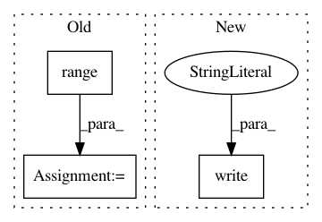

c9dc55111e8fdf4ab89cdd7976b17b7336bb2770,benchmark.py,,,#,53
Before Change
"max_batch_size": [32, 64, 128, 256, 512, 1024],
"max_seq_len": [16, 32, 64, 128, 256, 512],
"num_client": [1, 2, 4, 8, 16, 32, 64, 128],
"pooling_layer": [[-j] for j in range(1, 13)]
}
fp = open("benchmark-%d-fp16-%s.result" % (common["num_worker"], common["fp16"]), "w")
After Change
for i, j in zip(var_lst, avg_speed):
fp.write("|%s|%d|\n" % (i, j))
fp.flush()
fp.write("\n")
fp.close()
In pattern: SUPERPATTERN
Frequency: 3
Non-data size: 3
Instances
Project Name: hanxiao/bert-as-service
Commit Name: c9dc55111e8fdf4ab89cdd7976b17b7336bb2770
Time: 2019-01-21
Author: hanhxiao@tencent.com
File Name: benchmark.py
Class Name:
Method Name:
Project Name: OpenNMT/OpenNMT-py
Commit Name: 63871d5ab3301d015805abddd8f4259680d6a24a
Time: 2017-09-21
Author: bpeters@coli.uni-saarland.de
File Name: translate.py
Class Name:
Method Name: main
Project Name: streamlit/streamlit
Commit Name: b52d4c522b1d669783b6250c47a189c293ced625
Time: 2018-06-18
Author: adrien.g.treuille@gmail.com
File Name: lib/streamlit/reference.py
Class Name:
Method Name: display_reference